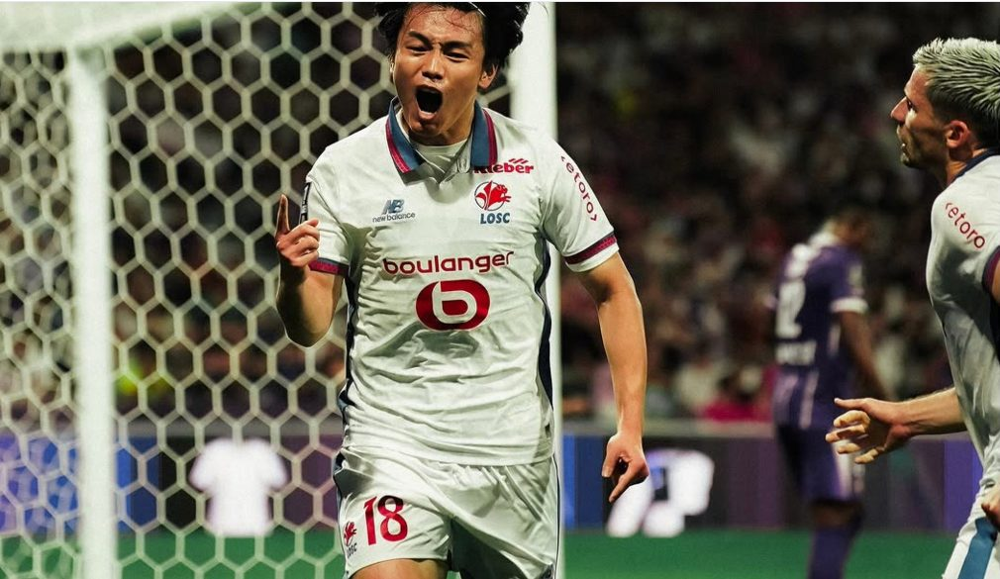
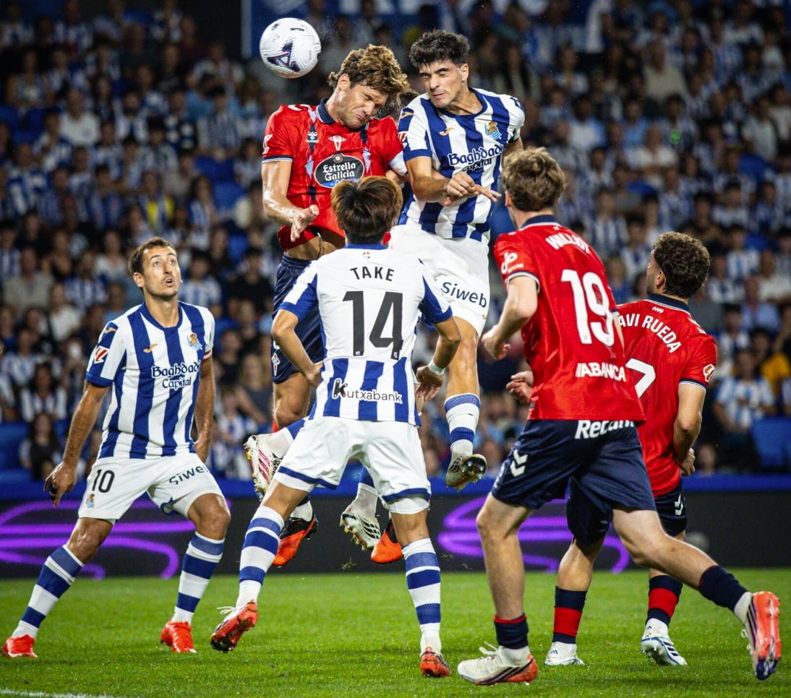
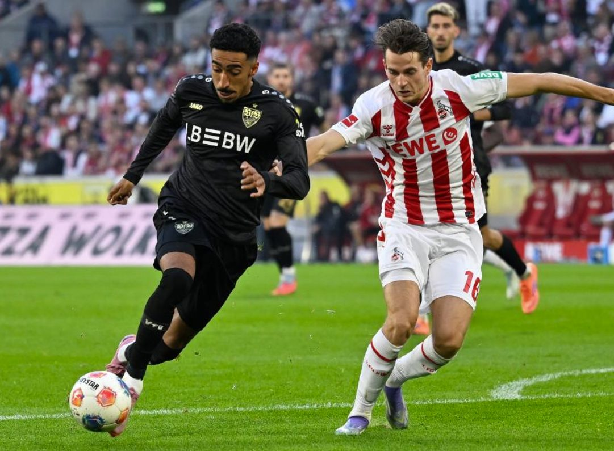
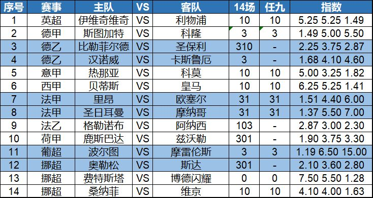

正如宝哥赛前所言，里尔客场1-0力克图卢兹，顺利赢球。昨晚竞火3中2，今晚全红信心足，竞盘火线继续约！
今晚是五大联赛德乙挪超等，宝哥给大家带来初步观点，希望能帮助大家中奖！

昨晚法甲第3轮，正如宝哥所言，里尔客场1-0小胜图卢兹，顺利拿到了3分，上田绮世第73分钟打进制胜球。新赛季前3轮，里尔2胜1平，目前暂时排名榜首。

西甲第6轮，皇家社会主场被塞尔塔0-0逼平，未能取得主场连胜。皇家社会全场有多达17次射门，5次射正，并疯狂刷出11个角球，但塞尔塔门将拉杜 凭借多次关键扑救成为了这场比赛客队力保球门不失的最大功臣。

今天第一场关注德甲第2轮，斯图加特主场迎战科隆。首轮德甲，斯图加特客场1-5惨败给德甲巨无霸拜仁，这个结果不用意外。这次回到主场，面对最近几个赛季的手下败将科隆，我认为斯图加特主场开门红概率不小。
第二场关注西甲第4轮，排名第7的皇家贝蒂斯主场迎战第2名的皇马。穆里尼奥回归皇马后，带领球队取得3连胜开局，姆巴佩也是连续进球，延续了世界杯期间的状态。但贝蒂斯2胜1负，开局也不算差。最近10次交锋，贝蒂斯1胜5平4负，战平皇马的次数不少。这次继续防冷为好。
下面是今天的14场和任九初步观点：

14场：10，3，310，3，10，10，31，31，103，301，3，301，0，10
任九：10，3，-，-，10，10，31，31，-，-，3，-，0，10
欢迎大家收藏宝哥首页，请分享给好友或转发到朋友圈，让更多人看到我。
安卓用户可以下载APP，更便捷看到宝哥每天的动态！